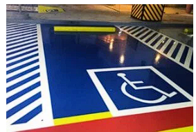
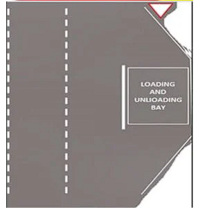
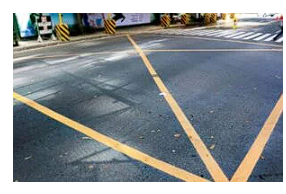
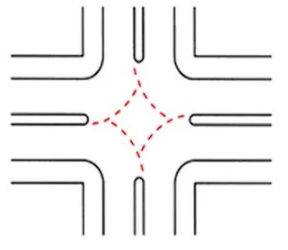
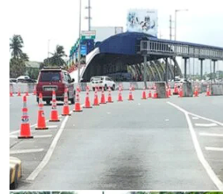
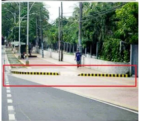
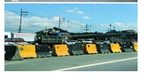

Other Lines
Other lines that provides essential information to drivers, helping them navigate the roadways safely and efficiently. They come in various shapes and colors, each conveying specific messages.
-

Parking Bay Marking
A marking indicating designated parking areas.
Tagalog: Isang pagmamarka na nagpapahiwatig ng mga itinalagang lugar para sa paradahan.
-

Loading and Unloading Bay Line Marking
A marking indicating areas for loading and unloading goods.
Tagalog: Isang pagmamarka na nagpapahiwatig ng mga lugar para sa paglo-load at pag-unload ng mga kalakal.
-

Do Not Block Intersection lines Marking
A marking indicating that vehicles should not block the intersection.
Tagalog: Isang pagmamarka na nagpapahiwatig na ang mga sasakyan ay hindi dapat humarang sa intersection.
-

Turn Lane Marking
A marking indicating a designated turn lane.
Tagalog: Isang pagmamarka na nagpapahiwatig ng itinalagang lane para sa pagliko.
-

Objects Within the Roadway
A marking indicating the presence of objects within the roadway.
Tagalog: Isang pagmamarka na nagpapahiwatig ng presensya ng mga bagay sa loob ng kalsada.
-

Marking On Curbs
A marking indicating the presence of objects on curbs.
Tagalog: Isang pagmamarka na nagpapahiwatig ng presensya ng mga bagay sa mga curb
-

Object Adjacent to the Roadway
A marking indicating the presence of objects adjacent to the roadway.
Tagalog: Isang pagmamarka na nagpapahiwatig ng presensya ng mga bagay sa tabi ng kalsada.
-
 Pedestrian Intersection Signalized Marking
Pedestrian Intersection Signalized MarkingA marking indicating where pedestrians may cross at an intersection with a signal.
Tagalog: Isang pagmamarka na nagpapahiwatig kung saan maaaring tumawid ang mga pedestrian sa isang intersection na may signal.